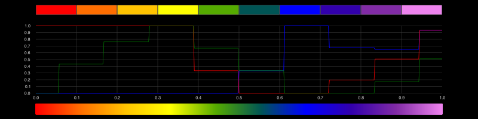
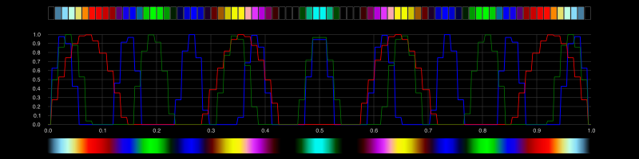
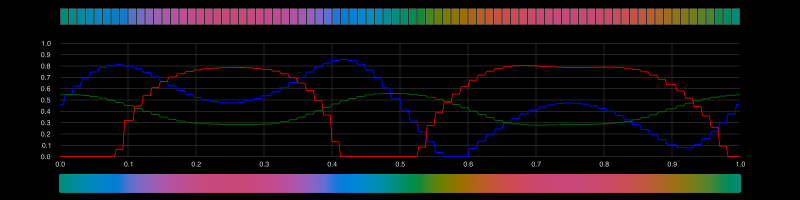

Making new colorschemes
To make new color schemes, you can quickly build arrays of colors; refer the Colors.jl and ColorSchemes.jl documentation.
Colors.jl provides a method to range() that accepts colorants:
using ColorSchemes, Colors
cs = ColorScheme(range(RGB(1, 0, 0), stop = colorant"green", length=15),
"gradient", "red to green 15")The ColorSchemeTools function make_colorscheme() lets you build more elaborate schemes.
You can supply the color specifications using different methods, depending on the arguments you supply:
- a list of colors and a number specifying the length
- a dictionary of linear segments
- an 'indexed list' of RGB values
- three Julia functions that generate values between 0 and 1 for the RGB levels
The diagrams in this section show: the elements of a colorscheme as individual swatches along the top; the changing RGB curves in the middle; and a continuously-sampled gradient below.
List of colors
Given a list of colors, use make_colorscheme(list, n) to create a new colorscheme with n steps.
For example, given an array of various colorants:
roygbiv = [
colorant"red",
colorant"orange",
colorant"yellow",
colorant"green",
colorant"blue",
colorant"indigo",
colorant"violet"
]you can use make_colorscheme(cols, 10) to create a colorscheme with 10 steps:
scheme = make_colorscheme(roygbiv, 10)
If you increase the number of steps, the interpolations are smoother. Here it is with 200 steps (shown in the top bar):
scheme = make_colorscheme(roygbiv, 200)
You can supply the colors in any format, as long as it's a Colorant:
cols = Any[
RGB(0, 0, 1),
Gray(0.5),
HSV(50., 0.7, 1.),
Gray(0.4),
LCHab(54, 105, 40),
HSV(285., 0.9, 0.8),
colorant"#FFEEFF",
colorant"hotpink",
]
scheme = make_colorscheme(cols, 8)
The Any array was necessary only because of the presence of the Gray(0..5) element. If all the elements are colorants, you can use [] or Colorant[].
Linearly-segmented colors
A linearly-segmented color dictionary looks like this:
cdict = Dict(:red => ((0.0, 0.0, 0.0),
(0.5, 1.0, 1.0),
(1.0, 1.0, 1.0)),
:green => ((0.0, 0.0, 0.0),
(0.25, 0.0, 0.0),
(0.75, 1.0, 1.0),
(1.0, 1.0, 1.0)),
:blue => ((0.0, 0.0, 0.0),
(0.5, 0.0, 0.0),
(1.0, 1.0, 1.0)))This specifies that red increases from 0 to 1 over the bottom half, green does the same over the middle half, and blue over the top half.
The triplets aren't RGB values... For each channel, the first number in each tuple are points on the 0 to 1 brightness scale, and should gradually increase. The second and third values determine the intensity values at that point.
The change of color between point p1 and p2 is defined by b and c:
:red => (
...,
(p1, a, b),
(p2, c, d),
...
)If a and b (or c and d) aren't the same, the color will abruptly jump. Notice that the very first a and the very last d aren't used.
To create a new ColorScheme from a suitable dictionary in this format, run make_colorscheme().
using Colors, ColorSchemes
scheme = make_colorscheme(dict)cdict = Dict(:red => ((0.0, 0.0, 0.0),
(0.5, 1.0, 1.0),
(1.0, 1.0, 1.0)),
:green => ((0.0, 0.0, 0.0),
(0.25, 0.0, 0.0),
(0.75, 1.0, 1.0),
(1.0, 1.0, 1.0)),
:blue => ((0.0, 0.0, 0.0),
(0.5, 0.0, 0.0),
scheme = make_colorscheme(cdict)
Indexed-list color schemes
The data to define an 'indexed list' color scheme looks like this:
terrain = (
(0.00, (0.2, 0.2, 0.6)),
(0.15, (0.0, 0.6, 1.0)),
(0.25, (0.0, 0.8, 0.4)),
(0.50, (1.0, 1.0, 0.6)),
(0.75, (0.5, 0.36, 0.33)),
(1.00, (1.0, 1.0, 1.0))
)The first item of each element is the location between 0 and 1, the second specifies the RGB values at that point.
The make_colorscheme(indexedlist) function makes a new ColorScheme from such an indexed list.
For example:
terrain_data = (
(0.00, (0.2, 0.2, 0.6)),
(0.15, (0.0, 0.6, 1.0)),
(0.25, (0.0, 0.8, 0.4)),
(0.50, (1.0, 1.0, 0.6)),
(0.75, (0.5, 0.36, 0.33)),
(1.00, (1.0, 1.0, 1.0)))
terrain = make_colorscheme(terrain_data, length = 50)
Functional color schemes
The colors in a 'functional' color scheme are produced by three functions that calculate the color values at each point on the scheme.
The make_colorscheme() function applies the first supplied function at each point on the colorscheme for the red values, the second function for the green values, and the third for the blue. You can use defined functions or supply anonymous ones.
Values produced by the functions are clamped to 0.0 and 1.0 before they're converted to RGB values.
Examples
The first example returns a smooth black to white gradient, because the identity() function gives back as good as it gets.
fscheme = make_colorscheme(identity, identity, identity)
The next example uses the sin() function on values from 0 to π to control the red, and the cos() function from 0 to π to control the blue. The green channel is flat-lined.
fscheme = make_colorscheme(n -> sin(n*π), n -> 0, n -> cos(n*π))
You can generate stepped gradients by controlling the numbers. Here, each point on the scheme is nudged to the nearest multiple of 0.1.
fscheme = make_colorscheme(
n -> round(n, digits=1),
n -> round(n, digits=1),
n -> round(n, digits=1), length=10)
The next example sinusoidally sends the red channel from black to red and back again.
fscheme = make_colorscheme(n -> sin(n * π), n -> 0, n -> 0)
The next example produces a striped colorscheme as the rippling sine waves continually change phase:
ripple7(n) = sin(π * 7n)
ripple13(n) = sin(π * 13n)
ripple17(n) = sin(π * 17n)
fscheme = make_colorscheme(ripple7, ripple13, ripple17, length=80)
If you're creating a scheme by generating LCHab colors, your functions should convert values between 0 and 1 to values between 0 and 100 (luminance and chroma) or 0 to 360 (hue).
f1(n) = 180 + 180sin(2π * n)
f2(n) = 50 + 20(0.5 - abs(n - 0.5))
fscheme = make_colorscheme(n -> 50, f2, f1,
length=80,
model=:LCHab)
ColorSchemeTools.make_colorscheme — Functionmake_colorscheme(dict;
length=100,
category="",
notes="")Make a new ColorScheme from a dictionary of linear-segment information. Calls get_linear_segment_color(dict, n) with n for every length value between 0 and 1.
make_colorscheme(indexedlist;
length=100,
category="",
notes="")Make a ColorScheme using an 'indexed list' like this:
gist_rainbow = (
(0.000, (1.00, 0.00, 0.16)),
(0.030, (1.00, 0.00, 0.00)),
(0.215, (1.00, 1.00, 0.00)),
(0.400, (0.00, 1.00, 0.00)),
(0.586, (0.00, 1.00, 1.00)),
(0.770, (0.00, 0.00, 1.00)),
(0.954, (1.00, 0.00, 1.00)),
(1.000, (1.00, 0.00, 0.75))
)
make_colorscheme(gist_rainbow)The first element of each item is the point on the color scheme.
make_colorscheme_new(f1::Function, f2::Function, f3::Function;
model = :RGB,
length = 100,
category = "",
notes = "functional ColorScheme")Make a ColorScheme using functions. Each function should take a value between 0 and 1 and return for that color component at each point on the ColorScheme, depending on the color model.
The default color model is :RGB, and the functions should return values in the appropriate range:
- f1 - [0.0 - 1.0] - red
- f2 - [0.0 - 1.0] - green
- f3 - [0.0 - 1.0] - blue
For the :HSV color model:
- f1 - [0.0 - 360.0] - hue
- f2 - [0.0 - 1.0] - saturataion
- f3 - [0.0 - 1.0] - value (brightness)
For the :LCHab color model:
- f1 - [0.0 - 100.0] - luminance
- f2 - [0.0 - 100.0] - chroma
- f3 - [0.0 - 360.0] - hue
make_colorscheme(colorlist, steps)Make a new colorscheme consisting of the colors in the array colorlist.
make_colorscheme([RGB(1, 0, 0), HSB(285, 0.7, 0.7), colorant"darkslateblue"], 20)